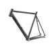
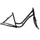
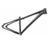
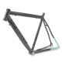
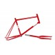
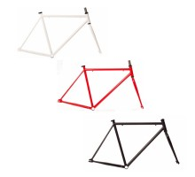
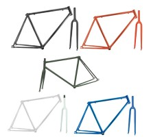
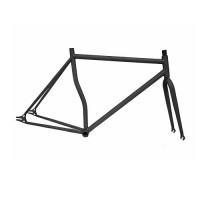
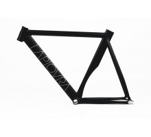
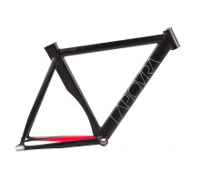

Cuadros de pista. Ref 90002332

Cuadros de pista. Ref 13232344

Cuadros MTB. Ref 0123232

Cuadros carrtera. Ref 9983232

Cuadros minivelo y fatbike. Ref 9980332

Cuadro pista fabric-k. Ref 9765466

Cuadros de pista clásico. Ref 575443555

Cuadro de pista curvado. Ref 5667899

Cuadro BLB la piovra air edicion especial. Ref 9100293

Cuadro BLB . Ref 00998733
